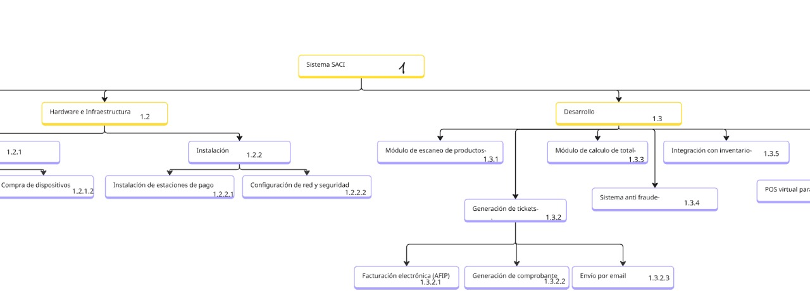

Hola!, Soy Jhoselin Zelada 💻✨
Analista de Datos Trainee | Estudiante avanzada de Ingeniería en Informática.
Me apasiona transformar datos en decisiones claras y confiables, buscando siempre aprender, mejorar y aportar valor real.
Sobre mí

Soy Analista de Datos en formación y estudiante avanzada de Ingeniería en Informática. Me especializo en la gestión, consulta y análisis de datos, trabajando con herramientas como SQL, Power BI y arquitecturas de bases de datos. Disfruto transformar información compleja en soluciones claras, limpias y orientadas a la toma de decisiones.
Me interesa desarrollarme en un equipo colaborativo, con propósito y enfoque en el aprendizaje continuo, donde pueda aportar valor a través de mi capacidad analítica, mi disciplina y mi compromiso. Mi objetivo es contribuir activamente a la creación de soluciones claras, seguras y de calidad.
Mis habilidades
Proyectos
Data Warehouse sobre Delitos en Buenos Aires

Descripción: Consolidé y transformé cientos de miles de datos sobre delitos en Buenos Aires para analizar tendencias y detectar patrones. A través de dashboards interactivos, convertí grandes volúmenes de información en visualizaciones claras y comprensibles, que permitieron identificar las zonas más peligrosas e impulsar estrategias para mejorar la seguridad de los ciudadanos.
Herramientas: SQL · Modelado Dimensional · ETL · Power BI · Draw.io · Git Hub
Ver proyectoDocumentación de APP RRHH

Descripción: Gestioné la documentación de una aplicación de Recursos Humanos, definiendo su alcance, funcionalidades y limitaciones. Esta documentación mejoró la comunicación entre los equipos, agilizó el desarrollo y aseguró una implementación más eficiente del sistema. *Definí el alcance del sistema para establecer sus objetivos, funcionalidades y límites. *Diseñé la documentación completa del sistema mediante UML, elaborando diagramas de casos de uso, clases, actividades y secuencia, junto con prototipos de interfaz de usuario.
Herramientas: · Alcane de un proyecto ·Draw.io · Documentación técnica · UML · Casos de uso · Diagrama de clases · Diagrama de secuencia · Diagrama de actividades
Ver proyectoGestión de Proyectos – SACI
Descripción: Gestioné la planificación completa del proyecto SACI aplicando buenas prácticas de administración de proyectos. Elaboré documentos clave como el Acta de Constitución, Registro de Interesados, Matriz Poder–Interés, EDT/WBS y su diccionario, además de la lista y secuencia de actividades. Incluí la Matriz RACI y realicé el registro y análisis de riesgos para asegurar una estructura clara, ordenada y alineada a los objetivos del proyecto.
Herramientas: Gestión de Proyectos · Documentación · Draw.io · Análisis de Riesgos · Office
Machine Learning para predicción de sueldos
Descripción: Modelo de Machine Learning para predecir salarios usando múltiples features.
Herramientas: Python | ML | Pandas
Contacto
Si querés contactarme, podés escribirme por: